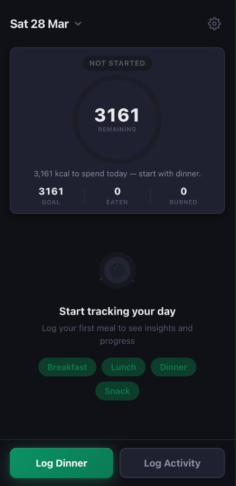
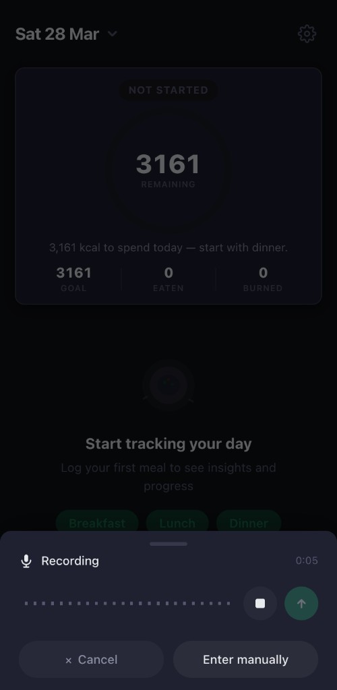
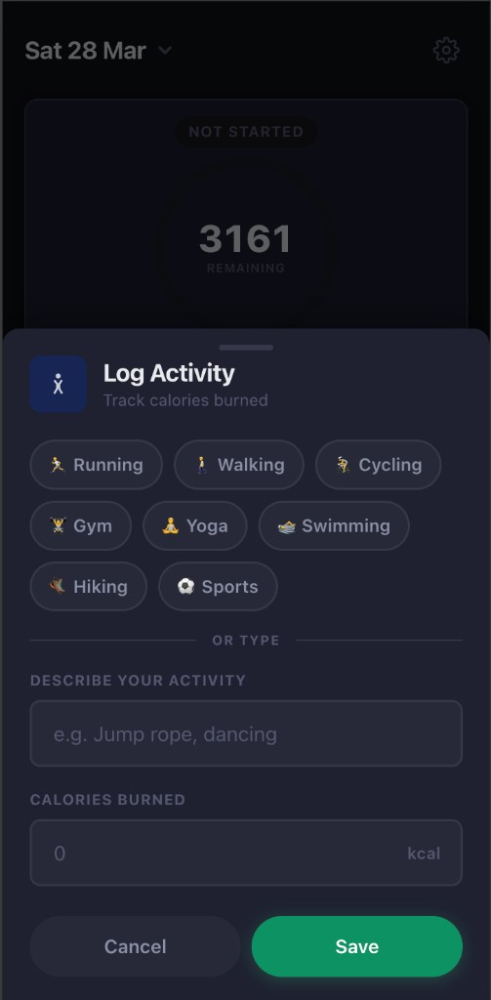

A voice-powered calorie tracker that turns natural speech into structured food logs — reducing meal logging from ~2 minutes to under 10 seconds.
Apps like HealthifyMe and MyFitnessPal have been around for over a decade. The feature set is mature — massive food databases, barcode scanners, meal plans. Yet most users quit within two weeks.
The reason isn't lack of information. It's friction. Logging a single meal means: open the app, tap "Add Food," search a database, scroll through 30+ variants, adjust serving sizes, and repeat for every item on your plate. That's ~2 minutes per meal, 6–8 minutes per day, of tedious data entry.
For something that's supposed to help you feel better about your health, it feels like homework. The moment life gets busy — you skip a log, then two, then the habit dies.
"Two rotis with dal and a bowl of curd" takes 3 seconds to say but 2 minutes to manually log. If you reduce the logging interaction from ~2 minutes to ~10 seconds, the cost-benefit equation flips — and the habit sticks.
Voice isn't just a convenience feature. It's a fundamental UX paradigm shift. The primary reason calorie tracking fails isn't lack of motivation — it's that the act of logging is too slow relative to the value it provides in the moment.
Calovoice is a voice-first calorie tracker. The core interaction: tap a button, say what you ate, and the app handles parsing, calorie estimation, and logging. The user reviews an editable summary — but in most cases, they just hit save.



| Decision | What & Why |
|---|---|
| Time-aware CTA | The floating button reads "Log Breakfast" before 11 AM, "Log Lunch" before 2 PM, "Log Snack" before 5 PM, "Log Dinner" after. Removes the cognitive overhead of categorization and nudges consistent meal patterns. |
| Calorie ring pace tick | A small tick on the progress ring shows where you "should" be at this hour (7 AM – 11 PM eating window). Ambient pacing info with zero text — the user feels it without reading it. |
| Contextual insights | 8 distinct branches generate specific guidance: "Eat ~520 kcal per meal across your next 2 meals" or "Nearly there — a light snack to finish." Adapts to time, logged meals, and remaining budget in real-time. |
| Predictive projection | After 2+ meals, extrapolates end-of-day intake from eating pace. "At your current pace, you'll exceed by ~400 kcal" — forward-looking without being anxious. |
| Animated numbers | Every caloric value counts up/down over 500ms with cubic ease-out. When you log 400 kcal, the "remaining" number smoothly descends. Data feels alive. |
| Empty state as onramp | No sad empty icon. A plate illustration, clear copy, and quick-add chips (Breakfast, Lunch, Dinner, Snack) that jump into the form with the label pre-filled. |
Stack: React 19 · TypeScript 5.9 · Firebase (Auth + Firestore) · OpenRouter LLM · CalorieNinjas API · Web Speech API · Vite 8 · MUI 7 · Zod · React Hook Form · PWA
The MVP validates one hypothesis: voice reduces friction enough to make calorie tracking habitual. The roadmap extends the concept from logging to real-time AI-powered nutritional guidance.
Voice-to-food pipeline, calorie ring with pace indicator, contextual insights, activity tracking, predictive projections.
An AI that doesn't just record what you ate — it talks back. It analyzes your day's data and guides real-time food decisions with specific, contextual recommendations.
Home-screen mic widget: tap, speak, done — without opening the app. Background LLM processing. The ultimate friction elimination.
The core product insight: calorie tracking is a means to an end. The end is making better decisions in the moment. The AI coach bridges that gap — it has your context (today's intake, your goal, remaining budget, time of day) and gives specific guidance, not generic advice.